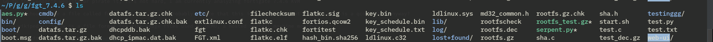
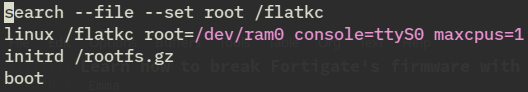
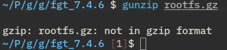
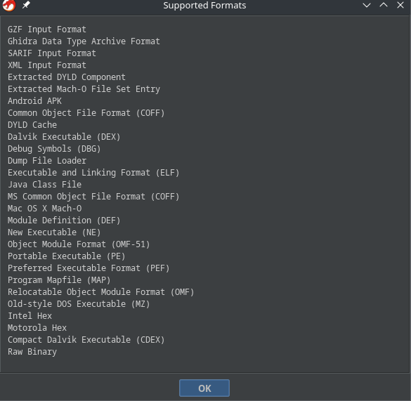
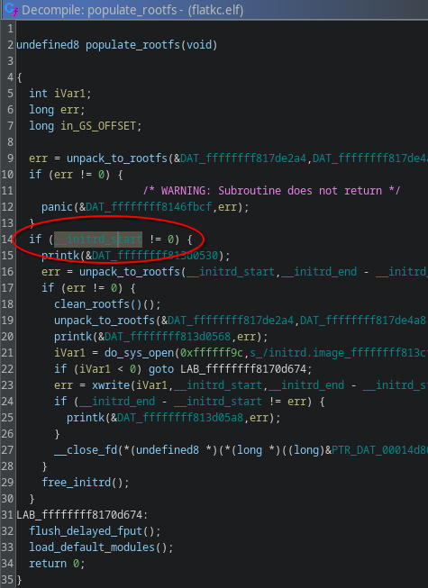

Learn how to break Fortigate's firmware with me for great good!
Table of Contents
1. Breaking Fortigate
1.1. Introduction
I find reverse engineering super cool, I read a thousand ctf/bug bounty blogposts, I did one easy ctf, I think I am ready to find a bug in a security sensitive device!
Cue in 2 months later…
Fortinet makes Internet facing devices, Internet facing devices are interesting for reverse engineers because if a hacker finds a 0day for that device, they'll have a foothold in your network in a manner no one can prevent.
1.2. How am I doing this?
The way I imagine this will go is I will get my hands on the firmware, and then I will be able to extract the binaries that are listening on the internet for traffic, in the hopes of analyzing it and finding a cool vulnerability. To recap: we get the firmware -> we extract the binaries -> we analyze the binaries -> we find a 0day
1.3. Getting the firmware image
Go to the vendor's website or pirate it, it's not hard, I am currently analyzing fortigate 7.4.6 KVM
Now you should have a file called fortios.qcow2, you'll probably notice that this image as-is is not useful, what is a qcow2 file anyway?
From wikipedia: "qcow is a file format for disk image files used by QEMU, a hosted virtual machine monitor."
Okay, so after following this github gist, we get 
Yours probably won't look the same, because i added a bunch of files
Cool, so after scouring every directory I notice that there's no trace of binaries here, is this the wrong image? Did I do something wrong?
Does this even work? I boot up the image and check, and it does, so what's up with that? How does this start? What's the entryway for a Linux system to start? Maybe the grub config will tell me something 
flatkc is the linux kernel image that gets loaded, rootfs.gz is the ramdisk, the virtual machine has an empty hdd slot so i assume this is where all of the binaries reside, let's gunzip it!

Okay, not a gzip file, what is it then?
``` 00000000: 9ca4 26aa cbd5 6c30 5b57 6108 0a2d 5b67 ..&…l0[Wa..-[g 00000010: 3b0f d50a dc9d b0ef a0c6 3265 301b cb21 ;………2e0..! 00000020: 733c ddf4 3242 68b3 234e bfaa f231 b780 s<..2Bh.#N…1.. 00000030: d084 5f2c 35a1 1220 abf8 bb8a 6ab3 ff13 ..,5.. ….j… 00000040: 57a9 b414 ff11 ca2a 1e14 0a53 d87a 073d W……*…S.z.= 00000050: abf2 2c8a e782 3b85 60bd 2e88 88a9 c140 ..,…;.`……@ 00000060: fca5 7b49 e3ee a971 1e50 0a02 b3e7 1fd8 ..{I…q.P…… 00000070: 2000 bae1 f2d0 eacb 6bdf 2bb2 c0ec 412a …….k.+…A* 00000080: 2412 0bca 1072 8ab2 7017 50b8 7591 702b $….r..p.P.u.p+ 00000090: bf0c a3b5 df4e 5527 7c6d 8522 7a10 6153 …..NU'|m."z.aS ```
it doesn't look like anything, this must mean that rootfs.gz is an encrypted file, flatkc must have some encryption functions that grab this rootfs.gz file and then decrypts it, we just need to slap flatkc in ghidra and look for it, right? Is this even possible for someone who hasn't touched a line of assembly since high school?
1.4. Reverse engineering the kernel image
I realize that to figure out how to decrypt the rootfs.gz file, I must first learn how the file is encrypted, so I try to load up the kernel image file for the router (here on after i'll simply call it 'flatkc', which is the name of the kernel image file) in Ghidra, but it doesn't work, Ghidra cannot load this type of file 
``file`` says that ``flatkc`` is a ``linux kernel boot executable image``, which is not one of the file types listed, fortunately there's this great tool that converts linux boot images into elf, built exactly for this purpose, we can now import it on Ghidra and start looking at it.
I look for functions related with startup and initramfs unpacking, I find a function called ``populaterootfs`` which has the initrd address on it, which i quickly make a note of, and yes, the image came with symbols, but seemingly only the linux ones and some timer management stuff for some fortigate service we aren't concerned with.

the address of ``_initramfsstart`` gets mentioned here by a bunch of functions, including an unlabeled one which i labelled myself, proccryptokeys (the function does a lot more than this, but you'll see this later), out of all the functions mentioned, this one seems the most interesting! Let's look at it
1.4.1. Breakdown of the function
The decompiled version of the proccryptokeys function is very long, and despite the name that i gave it, it does not just process crypto keys (in retrospective, it is a pretty nonsensical name)
I wrote a bunch explaining each and every single line of the decompiled code, but that wasn't very good reading so i'll just give you the high level overview of the code except for the interesting part
- It does a bunch of memory hygiene operations like zeroing buffers and initializing variables
- It verifies that the image matches a RSA BER-encoded key
- starts and updates a few SHA buffers
- it encrypts/decrypts something with AESencblk (!)
I learned this half from being somewhat experienced with C and reading the decompiled code, and half from asking an LLM what each specific code snippet I was in doubt about did